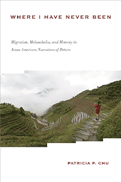

<HTML><head><script> (function(i,s,o,g,r,a,m){i['GoogleAnalyticsObject']=r;i[r]=i[r]||function(){  (i[r].q=i[r].q||[]).push(arguments)},i[r].l=1*new Date();a=s.createElement(o),  m=s.getElementsByTagName(o)[0];a.async=1;a.src=g;m.parentNode.insertBefore(a,m)   })(window,document,'script','//www.google-analytics.com/analytics.js','ga');   ga('create', 'UA-43183130-1', 'temple.edu');   ga('send', 'pageview'); </script><title>Patricia P. Chu: Where I Have Never Been - Print</TITLE><link rel="stylesheet" href="../general.css" type="text/css"><SCRIPT LANGUAGE = JAVASCRIPT></SCRIPT></HEAD><BODY LINK="#3152A5" VLINK="#3152A5" ALINK=Gray BGCOLOR=White><CENTER><P CLASS=intro><br>Reframing the Asian American literary tradition through stories of return to Asia<br><br></P></CENTER><br>&nbsp;<!--none//--><Table width="100%" border=0 cellspacing=5><tr><td width="175" align="center"></td><td><h1 class = "booktitle">Where I Have Never Been</h1> <h1 class = "subtitle">Migration, Melancholia, and Memory in Asian American Narratives of Return</h1><h3 class="author">Patricia P. Chu </h3><p class="info">paper EAN: 978-1-4399-0226-4</br>$39.95, Jan 19, <font color=#990033>Not Yet Published Preorder</font><br><p class="info">cloth EAN:  978-1-4399-0225-7</br>$104.50, Jan 19, <font color=#990033>Not Yet Published Preorder</font><br><p class="info">Electronic Book EAN: 978-1-4399-0227-1</br>$39.95, Jan 19, <font color=#990033>Not Yet Published Preorder</font><br><p class="info">286 pp, 6 x 9, </p></td></tr></table></P></td></tr></table><BR><BLOCKQUOTE></BLOCKQUOTE><P><P><p>In researching accounts of diasporic Chinese offspring who returned to their parents' ancestral country, author Patricia Chu learned that she was not alone in the experience of growing up in America with an abstract affinity to an ancestral homeland and community. The bittersweet emotions she had are shared in Asian American literature that depicts migration-related melancholia, contests official histories, and portrays Asian American families as flexible and transpacific. <i> </i><br/><br/> <i>Where I Have Never Been </i>explores the tropes of return, tracing both literal return visits by Asian emigrants and symbolic "returns": first visits by diasporic offspring. Chu argues that these Asian American narratives seek to remedy widely held anxieties about cultural loss and the erasure of personal and family histories from public memory. In fiction, memoirs, and personal essays, the writers of return narratives-including novelists Lisa See, May-lee Chai, Lydia Minatoya, and Ruth Ozeki, and best-selling author Denise Chong, diplomat Yung Wing, scholar Winberg Chai, essayist Josephine Khu, and many others-register and respond to personal and family losses through acts of remembrance and countermemory. <i> </i><br/><br/>In the series <i>Asian American History and Culture, </i>edited by Cathy Schlund-Vials, Rick Bonus, and Shelley Sang-Hee Lee. Founding editor, Sucheng Chan; editor emeriti, Michael Omi, David Palumbo-Liu, K. Scott Wong, and Linda Trinh V&otilde;<br><P CLASS="top"><A HREF="#top">BACK TO TOP</A></P></p><P></p><p></b></p><BR><p></p></P><BR>&nbsp;<p><P><H2  class="inpageheading"><A NAME="author bio"></a>About the Author(s)</H2><p><b>Patricia P. Chu</b> is an Associate Professor of English at George Washington University and the author of <i>Assimilating Asians: Gendered Strategies of Authorship in Asian America</i>.<br><P CLASS="top"><A HREF="#top">BACK TO TOP</A></P></P><p><h2 class="inpageheading"><a name="subjects"></a>Subject Categories</h2> <p><a href="http://www.temple.edu/tempress/asian_amer.html" target="_top">Asian American Studies</a> <br><a href="http://www.temple.edu/tempress/literature.html" target="_top">Literature and Drama</a> <br><a href="" target="_top"></a> <br><a href="" target="_top"></a> <br><a href="" target="_top"></a> </p></p><P><h2 class="inpageheading">In the Series</h2><p><a target="_top" href="http://www.temple.edu/tempress/asam_history.html" OnMouseOver="window.status='Click for other books in this series!';return true;"OnMouseOut="window.status=" ><i>Asian American History and Culture</i></a></P><p><p>Founded by Sucheng Chan in 1991, the Asian American History and Culture series has sponsored innovative scholarship that has redefined, expanded, and advanced the field of Asian American studies while strengthening its links to related areas of scholarly inquiry and engaged critique. Like the field from which it emerged, the series remains rooted in the social sciences and humanities, encompassing multiple regions, formations, communities, and identities. Extending the vision of founding editor Sucheng Chan and emeriti editor Michael Omi, David Palumbo-Liu, K. Scott Wong and Linda Trinh Võ, series editors Cathy Schlund-Vials, Rick Bonus, and Shelley Sang-Hee Lee continue to develop a foundational collection that embodies a range of theoretical and methodological approaches to Asian American studies.</p></P></P></P><P>&nbsp;</P><font face="Arial" size="1"><a href="copyright.html" OnMouseOver="window.status='Web Copyright Policy';return true;" OnMouseOut="window.status=''" TITLE="Web Copyright Policy">&copy;</a> 2019 <a href="http://www.temple.edu" target="new" OnMouseOver="window.status='Link to Temple University home page';return true;" OnMouseOut="window.status=''" TITLE="Link to Temple University home page">Temple University</a>. All Rights Reserved. This page: <a href="http://www.temple.edu/tempress/titles/2078_reg.html"OnMouseOver="window.status='Link to the book page';return true;" OnMouseOut="window.status=''" TITLE="Link to the book page">http://www.temple.edu/tempress/titles/2078_reg.html.</a></font></BODY></HTML>                    
